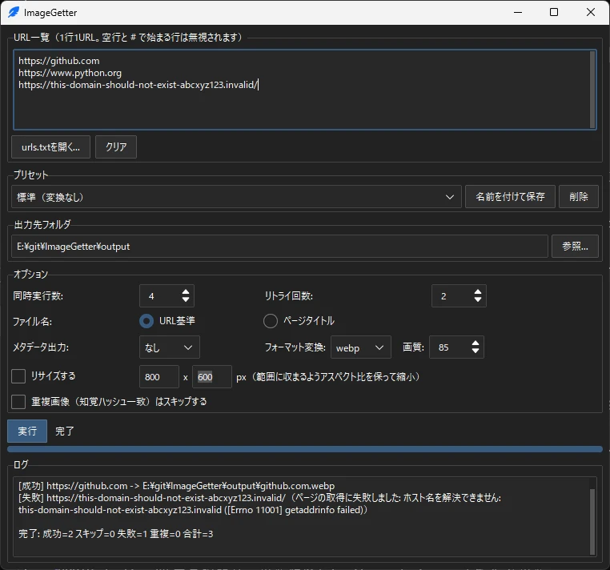

URL一括取得
URLを1行ずつ書いたテキストファイルを渡すだけで、各ページの「og:image」をまとめて取得・保存します。og:imageが無いページは「Twitter Card」の画像に自動で切り替えます。
複数URLのシェア画像を一括ゲット
urls.txtにURLを並べるだけで、各ページのog:image（シェア用のサムネイル画像）をまとめて取得・保存します。GUI版とCLI版の両方を収録し、Claude CodeなどのAIエージェントからもそのまま呼び出せるWindows向けツールです。

1件ずつ右クリック保存していた作業を、URLのリストを渡すだけの一括処理に置き換えます。
URLを1行ずつ書いたテキストファイルを渡すだけで、各ページの「og:image」をまとめて取得・保存します。og:imageが無いページは「Twitter Card」の画像に自動で切り替えます。
画像の知覚ハッシュ（dHash）を計算し、既に保存した画像と同一とみなせるものは2件目以降の保存をスキップします。同じ画像を二重に保存しません。
画面操作だけで使えるダークテーマの「GUI版」と、コマンド操作の「CLI版」を同梱。プログラミング知識がなくても、自動化に組み込みたい場合でもそのまま使えます。
出力先フォルダやオプションの組み合わせを「プリセット」として保存・呼び出しできます。「Web掲載用」「SNS用」などよく使う設定をあらかじめ5種類収録し、自分用の設定も名前を付けて保存できます。
取得した画像をjpg / png / webp形式へ変換し、指定した範囲に収まるようリサイズできます。jpg・webpへの変換時は画質（1〜100）を数値で指定可能です。
複数URLを同時に処理する高速モードと、失敗時の自動リトライに対応。URL数が多い場合でも安定して処理できます。
取得したページのタイトル・取得日時・画像サイズなどをJSON/CSV形式でまとめて出力できます。整理やチェック作業に使えます。
CLI版はMCPサーバーではなく明確な入出力仕様を持つCLIとして提供。--jsonを付けるだけで結果がJSON形式に整形され、Claude CodeなどのAIエージェントから追加設定なしに直接呼び出せます。
GUI版なら4ステップで画像収集が完了します。
取得したいページのURLを1行に1つずつ書いたテキストファイル（urls.txt）を用意します。空行と#で始まる行は無視されます。
ImageGetterGUI.exeをダブルクリックします。コンソール（黒い画面）は表示されず、ダークテーマの画面がそのまま開きます。
テキストエリアに直接入力するか、「urls.txtを開く...」ボタンから用意したファイルを読み込みます。出力先フォルダやオプションは、必要に応じてプリセットから選ぶだけで一括反映できます。
指定した保存先フォルダに画像がまとめて保存されます。進捗バーとログに、URLごとの成功・失敗・スキップ・重複の状況がリアルタイムに表示されます。
urls.txtを指定して実行します（例: ImageGetter.exe urls.txt --out .\output）。AIエージェントから自動実行したい場合は、下記「オプション」の「AIエージェント向け」を参照してください。GUI版の画面上の設定項目と、CLI版のコマンドラインオプションです。各グループをクリックすると展開します。
| オプション | 説明 |
|---|---|
| --out | 画像の保存先フォルダ。存在しなければ自動作成されます。GUI版では省略時にexeと同じフォルダの「output」フォルダになります |
| --workers | 同時に処理するURL数（同時実行数）。デフォルト1（逐次実行）。URL数が多い場合に速度が改善します |
| --retries | ページ取得・画像ダウンロード失敗時のリトライ回数。デフォルト0 |
| --retry-wait | リトライ時の待機秒数の基準値。試行回数に応じて線形に増加します（例: 1.0秒指定なら1回目失敗後1.0秒、2回目失敗後2.0秒待機） |
| --filename-mode title | 保存ファイル名をページタイトル基準にします。省略時はURL（ドメイン+パス+クエリ）基準。タイトルが取得できないページはURL基準に自動フォールバックします |
| オプション | 説明 |
|---|---|
| --metadata json | 取得結果（ページタイトル・取得日時・元URL・画像サイズ・Content-Type等）をJSON形式でまとめて出力します |
| --metadata csv | 同内容をCSV形式で出力します |
| --metadata-out | メタデータの出力先パス。省略時は出力フォルダ内に metadata.json / metadata.csv として保存されます |
| オプション | 説明 |
|---|---|
| --resize WIDTHxHEIGHT | 指定した範囲（例: 800x600）に収まるよう、アスペクト比を保ったままリサイズします |
| --format | 保存フォーマットを jpg / jpeg / png / webp に変換します。SVGなどPillowで開けない形式の画像は変換をスキップし、そのまま保存されます |
| --quality | jpg / webp に変換する際の画質（1〜100の整数）。未指定時はPillowの既定値を使用します。pngへの変換には効果がなく、範囲外の値を指定するとエラーになります |
| オプション | 説明 |
|---|---|
| --dedupe | 画像の知覚ハッシュ（dHash）を計算し、既に保存した画像と同一とみなせるものは2件目以降の保存をスキップします |
重複と判定された場合、結果のstatusはduplicateになり、saved_pathには最初に保存したファイルのパスが入ります（新しいファイルとしては保存されません）。
| プリセット名 | 内容 |
|---|---|
| 標準（変換なし） | フォーマット変換・リサイズ・重複除外を行わない基本設定 |
| Web掲載用 WebP | webp形式に変換し、1200×1200pxに収まるようリサイズ（画質80、重複除外あり） |
| SNS用 JPEG | jpg形式に変換し、1200×630pxに収まるようリサイズ（画質85、重複除外あり） |
| サムネイル小 | webp形式に変換し、400×400pxに収まるようリサイズ（画質70、重複除外あり） |
| 資料用（メタデータ付き） | ファイル名をページタイトル基準にし、メタデータをCSV出力（重複除外あり、リトライ3回） |
出力先フォルダ・オプションの組み合わせをプリセットとして選ぶだけで一括反映できます。設定を変更すると選択中のプリセットへ自動的に保存され、「名前を付けて保存」ボタンで新規プリセットとして保存、「削除」ボタンで削除できます（最後の1件は削除できません）。保存先はexeと同じフォルダのpresets.json（atomic書き込み）です。プリセットはGUI版固有の機能で、CLI版の引数仕様には影響しません。
| オプション | 説明 |
|---|---|
| --json | 実行結果を標準出力にJSON形式のみで出力します（進捗ログは標準エラー出力に回ります） |
| --no-pause | 完了後の「終了するには Enter キーを押してください」という待機を省略します（自動実行向け） |
| --timeout | HTTPリクエストのタイムアウト秒数。デフォルト15秒 |
--json指定時は、input・out_dir・total・success・skipped・failed・duplicateと、URLごとの結果を格納したresults配列を含むJSONのみが標準出力に返ります。各結果のstatusはsuccess / skipped（og:image・twitter:imageのいずれも見つからない、または画像として認識できない）/ failed（取得・保存に失敗）/ duplicate（--dedupe指定時に既存画像と同一と判定）のいずれかです。title・width・height・content_type・fetched_atは取得できなかった場合nullになります。入力ファイルが読み込めないなど実行自体が継続できない致命的なエラーの場合は、resultsを含まないJSON（inputとerrorのみ）が返ります。終了コードは、入力ファイルが読み込めない・出力先フォルダを作成できない・メタデータの出力に失敗した場合に1、それ以外は0です。
導入前に確認してください。
ページ側の仕様変更やアクセス制限により、まれにog:image・twitter:imageの取得に失敗する場合があります。
ログイン（Cookie認証）が必要なページには対応していません。
取得できるのはページの「シェア用画像（og:image / Twitter Card）」のみです。ページ内にある他の画像すべてを取得する機能ではありません。
Windows向けの配布のみです（Mac・Linuxには対応していません）。exe版はPythonのインストール不要でそのまま使えます。